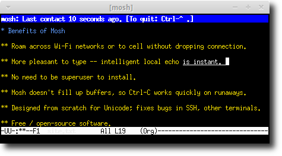
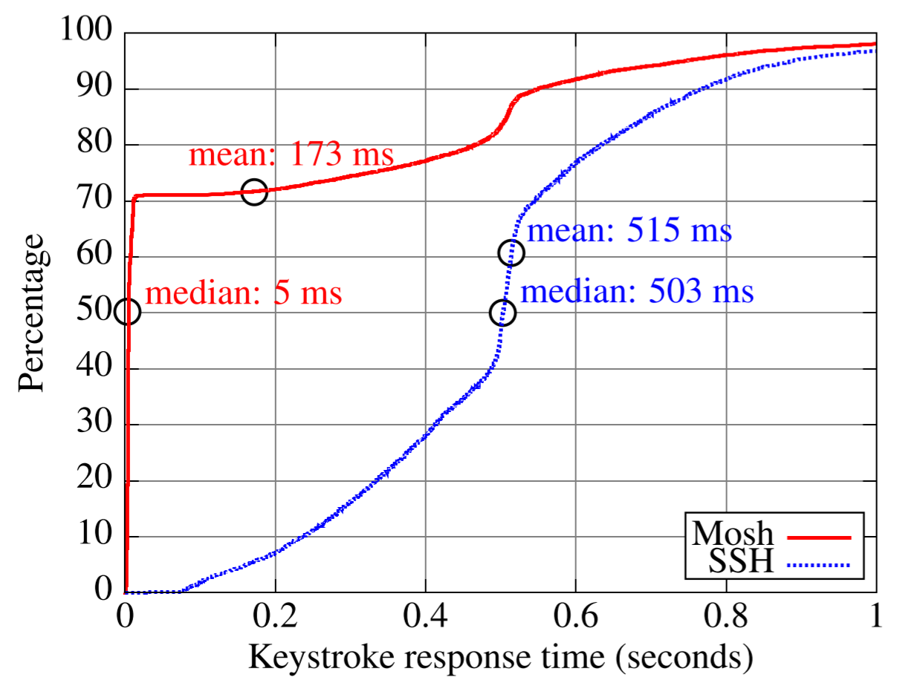
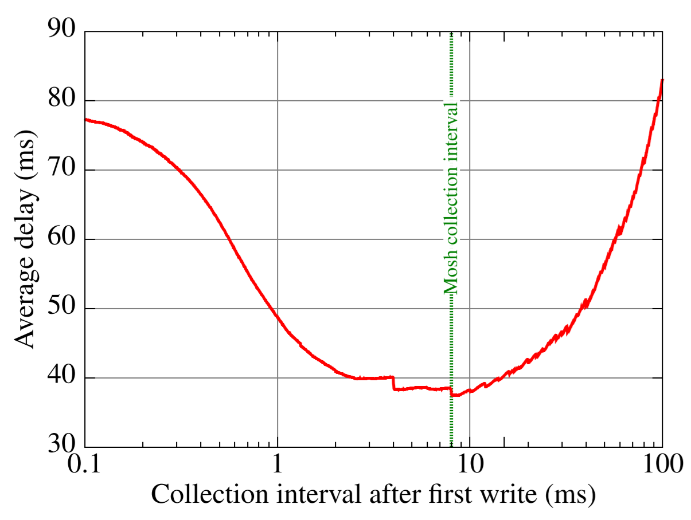

阅读论文《Mosh: An Interactive Remote Shell for Mobile Clients》。
好久都没写博客了 -_-|
Keith Winstein
Hari Balakrishnan
M.I.T. Computer Science and Artificial Intelligence Laboratory, Cambridge, Mass.
{keithw,hari}@mit.edu
Abstract
Mosh (mobile shell) is a remote terminal application that supports intermittent（间歇性的） connectivity, allows roaming（漫游） , and speculatively（推测性地） and safely echoes user keystrokes（击键） for better interactive response over high-latency paths. Mosh is built on the State Synchronization Protocol (SSP), a new UDP-based protocol that securely synchronizes client and server state, even across changes of the client’s IP address. Mosh uses SSP to synchronize a charactercell（字符单元） terminal emulator, maintaining terminal state at both client and server to predictively echo keystrokes. Our evaluation analyzed keystroke traces from six different users covering a period of 40 hours of real-world usage. Mosh was able to immediately display the effects of 70% of the user keystrokes. Over a commercial EV-DO (3G) network, median keystroke response latency with Mosh was less than 5 ms, compared with 503 ms for SSH. Mosh is free software, available from http://mosh.mit.edu. It was downloaded more than 15,000 times in the first week of its release.
Introduction
Remote terminal applications are almost as old as packetswitched data networks. The most popular such application today is the Secure Shell (SSH) [1], which runs inside a terminal emulator. Unfortunately, SSH has two major weaknesses that make it unsuitable for mobile use. First, because it runs over TCP, SSH does not support roaming among IP addresses, or cope with intermittent connectivity while data is pending, and is almost unusable over marginal paths with non-trivial packet loss. Second, SSH operates strictly in character-at-atime mode, with all echoes and line editing performed by the remote host. On today’s commercial EV-DO and UMTS (3G) mobile networks, round-trip latency is typically in the hundreds of milliseconds when unloaded, and on both 3G and LTE networks, delays reach several seconds when buffers are filled by a concurrent bulk transfer. Such delays often make SSH painful for interactive use on mobile devices.
This paper describes a solution to both problems. We have built Mosh, the mobile shell, a remote terminal application that supports IP roaming, intermittent connectivity, and marginal network connections. Mosh performs predictive client-side echoing and line editing without any change to server software, and without regard to which application is running. Mosh makes remote servers feel more like the local computer, because most keystrokes are reflected immediately on the user’s display—even in full-screen programs like a text editor or mail reader.
These features are possible because Mosh operates at a different layer from SSH. While SSH securely conveys an octet-stream（八位字节流） over the network and then hands it off to a separate client-side terminal emulator to be interpreted and rendered in cells on the screen, Mosh contains a server-side terminal emulator and uses a new protocol to synchronize terminal screen states over the network, using the principle of application-layer framing [2].
Because both the server and client maintain an image of the screen state, Mosh can support intermittent connectivity and local editing, and can adjust its network traffic to avoid filling network buffers on slow links. As a result, unlike in SSH, in Mosh “Control-C” always works to cease（停止） output from a runaway process within an RTT.
Mosh’s design makes two principal contributions:
- State Synchronization Protocol: A new secure object synchronization protocol on top of UDP to synchronize abstract state objects in the presence of roaming, intermittent connectivity, and marginal networks (§2).
- Speculation（猜测）: Mosh maintains the screen state at both the server and client and uses the above protocol to synchronize them (§3). The client makes guesses about the effect each new keystroke will have on the screen, and when confident renders the effects immediately. The client verifies its predictions and can repair the screen state if necessary.
We have implemented Mosh in C++ and have experimented across various networks and across disconnections (§4). Mosh is free software, distributed with a variety of operating systems and at http://mosh.mit.edu. Mosh was downloaded more than 15,000 times in its first week of release in April 2012. An example of Mosh’s interface is shown in Figure 1.
Figure1: Mosh in use 
State Synchronization Protocol
Mosh works to convey the most recent state of the screen from server to client at a “frame rate” chosen based on network conditions. This allows the server to avoid filling up network buffers, because it does not need to send every octet generated by the application. (The reverse direction has less flexibility because the client must send every keystroke to the server.)
Supporting this is SSP, a lightweight secure datagram protocol to synchronize the state of abstract objects between a local node, which controls the object, and a remote host that may be only intermittently connected.
A state-synchronization approach is appropriate for tasks like editing a document or using an e-mail or chat application, which control the entire screen and provide their own means of navigation through a document or chat session. But it causes trouble for a task like “cat”ing a large file to the screen, where the user might rely on having accurate history on the scrollback buffer.
When these semantics are a problem, the user can use a pager such as less or more, or can use the screen or tmux utilities, which are essentially pagers for the entire terminal. Future versions of Mosh will allow the user to browse the scrollback history.
The Mosh system runs SSP in each direction, instantiated on two different kinds of objects. From client to server, the objects represent the history of the user’s input. From server to client, the objects represent the contents of the terminal window.
Protocol design goals
SSP’s design goals were to:
- Leverage（利用） existing infrastructure for authentication and login, e.g., SSH.
- Not require any privileged（特权） code.
- At any time, take the action best calculated to fastforward the remote host to the sender’s current state.
- Accommodate（适应） a roaming client whose IP address changes, without the client’s having to know that a change has happened.
- Recover from dropped or reordered packets.
- Ensure confidentiality and authenticity.
Because SSP doesn’t use any privileged code or authenticate users, and key exchange happens out-of-band（？）, its security concerns are simplified. To bootstrap（引导） the session, the user runs a script that logs in to the remote host using conventional means (e.g., SSH) and runs the unprivileged server. This program listens on a high UDP port and prints out a random shared encryption key. The system then shuts down the SSH connection and talks directly to the server over UDP.
SSP is organized into two layers. A datagram layer sends UDP packets over the network, and a transport layer is responsible for conveying the current object state to the remote host.
Datagram Layer
The datagram layer maintains the “roaming” connection. It accepts opaque（？） payloads from the transport layer, prepends an incrementing sequence number, encrypts the packet, and sends the resulting ciphertext in a UDP datagram. It is responsible for estimating the timing characteristics of the link and keeping track of the client’s current public IP address.
The security of the system is built on AES-128 in the Offset Codebook (OCB) mode [3], which provides confidentiality and authenticity with a single secret key.
To handle reordered and repeated packets, SSP relies on the principle of idempotency（幂等性）. Each datagram sent to the remote site represents an idempotent operation at the recipient—a “diff” between a numbered source and target state. As a result, unlike Datagram TLS and Kerberos, SSP does not need to maintain a replay cache or other message history state, simplifying the design and implementation.
Client roaming. Every time the server receives an authentic datagram from the client with a sequence number greater than any before, it sets the packet’s source IP address and UDP port number as its new “target.” As a result, client roaming happens automatically, without the client’s timing out or even knowing that it has changed public IP addresses.
Estimating round-trip time and RTT variation. The datagram layer is also responsible for estimating the smoothed round-trip time (SRTT) and RTT variation (RTTVAR) of the connection. Every outgoing datagram contains a millisecond timestamp and an optional “timestamp reply,” containing the most recently-received timestamp from the remote host.
We use the algorithm of TCP [4] with three changes:
- Because every datagram has a unique sequence number, there is no ambiguity（歧义） between the timestamps of retransmissions of the same payload.
- SSP adjusts the “timestamp reply” by the amount of time since it received the corresponding timestamp. Therefore, policies like delayed ACKs do not affect the accuracy of the RTT estimates.
- We reduce the lower limit on the retransmission timeout to be 50 ms instead of one second. SSH runs over TCP and rarely benefits from fast retransmissions, meaning it generally cannot detect a dropped keystroke in less than a second.
Transport Layer
The transport layer synchronizes the contents of the local state to the remote host, and is agnostic to the type of objects sent and received.
Transport sender behavior: The transport sender updates the receiver to the current state of the object by sending an Instruction: a self-contained message listing the source and target states and the binary “diff” between them. This “diff” is a logical one, calculated by the object implementation. The ultimate semantics of the protocol depend on the type of object, and are not dictated by SSP. For example, for user inputs, the diff contains every intervening keystroke, whereas for screen states, it is only the minimal message that transforms the client’s frame to the current one.
Transport sender timing: Because SSP can construct a diff between any two object states, it is not required to send every octet it receives from the host and can modulate（调节） the “frame rate” based on network conditions. The minimum interval between frames is set at half the smoothed RTT estimate, so there is about one Instruction in flight to the receiver at any time.
As a result, when a process goes haywire（发生故障） and floods the terminal, network buffers do not fill up and increase latency, so unlike in prior work, Control-C and other interrupt sequences continue to work.
The transport sender uses delayed acks, similar to TCP, to cut down（减少） on excess（多余的） packets. In more than 99.9% of cases in our experiments, a delay of 100 ms was sufficient to let the delayed ACK piggyback on host data.
The server also pauses from the first time its object has changed before sending off an Instruction, because updates to the screen tend to clump together, and it would be wasteful to send off a new frame with a partial update and then have to wait the full “frame rate” interval before sending another. A collection interval of 8 ms was chosen as optimal after analyzing application traces (§4).
SSP sends an occasional（偶尔） heartbeat to allow the server to learn when the client has roamed to a new IP address, and to allow the client to warn the user when it hasn’t recently heard from the server. The heartbeat also keeps the connection open when the client is behind a network address translator. We chose an interval of 3 seconds to compromise between responsiveness and the desire to reduce unnecessary chatter.
Remote Terminal with Speculative Local Echo
To support the Mosh application, we implemented a terminal emulator that obeys the SSP object interface. The client sends all keystrokes to the server, which applies them and maintains the authoritative state of the terminal, which it in turn synchronizes back to the client.
The client intelligently guesses the effect that keystrokes will have on the terminal, and in most cases can speculatively apply such effects immediately. The client observes the success of its predictions to decide how confident to be and whether to display the predictions to the user.
On high-delay connections, we underline（强调） unconfirmed predictions so the user doesn’t become misled. This underline trails behind the user’s cursor and disappears gradually as responses arrive from the server. Occasional mistakes can be removed within an RTT and do not cause lasting effect.
Implementing the terminal emulator
Mosh’s terminal emulator implements the subset of the ISO/IEC 6429/ECMA-48 language [5] used by typical terminal emulators, including the xterm, gnome-terminal, Terminal.app, and PuTTY programs for X11, OS X, and Windows. This protocol was popularized by Digital Equipment Corp. in the 1970s and 80s and specifies a series of escape（转义） sequences to move the cursor, render characters in bold and colors, erase areas of the screen, etc. The protocol is bidirectional, as the host can query the terminal for its current character position and ask it to identify itself.
local echo
Because Mosh operates at the terminal emulation layer and maintains the screen state at both the server and client, it is possible for the client to make predictions about the effect of user keystrokes and later verify its predictions against the authoritative screen state coming from the server.
Most Unix applications operate similarly in response to user keystrokes. They either echo the key at the current cursor location or not. As a result, it is possible to approximate（近似） a local user interface for arbitrary remote applications. We use this technique to boost the perceived interactivity of a Mosh session over a high-latency network or one with packet loss.
Our general strategy is for the Mosh client to make an echo prediction each time the user hits a key, but not necessarily to display this prediction immediately.
The predictions are made in groups known as “epochs,” with the intention that either all of the predictions in an epoch will be correct, or none will. An epoch begins tentatively（暂时）, making predictions only in the background. If any prediction from a certain epoch is confirmed by the server, the rest of the predictions in that epoch are immediately displayed to the user, along with any future predictions in the same epoch.
Some user keystrokes are likely to alter the host’s echo state from echoing to not, or are otherwise hard to predict, including the up- and down-arrow keys and control characters. These cause Mosh to lose confidence and increment the epoch, so that future predictions are made in the background again.
In practice, this approach accommodates a wide variety of application behaviors, including multi-mode editors like vi (which sometimes echo conventionally and sometimes don’t), and the possibility that the user might type a command at the prompt (e.g., passwd) that stops server-side echoes after the ENTER key is typed.
Because the decision to perform local echo is made entirely based on the application’s observed behavior, applications need not be rewritten to accommodate local echo. Unlike prior work, Mosh’s local echo works even with full-screen programs (like emacs) that put the terminal driver in “raw” mode and do their own echoing.
In typical use, Mosh can display immediately the effects of almost all “typing,” which constitutes more than two-thirds of user keystrokes in our captures. The remaining keystrokes are principally “navigation” (such as “n” to move to the next e-mail message in a mail reader), which cannot be predicted locally.
Server-side assistance for prediction evaluation
For the above algorithm to work properly, the Mosh client must be able to reliably determine whether its echo predictions are correct. Early versions of Mosh attempted to do this with the client only, by simply examining whether a predicted echo was present on the screen by the time the Mosh server had acknowledged the corresponding keystroke.
Unfortunately, in trials, we found that applications sometimes take tens of milliseconds after input is presented to them before echoing to the screen. This can lead the Mosh server to acknowledge an input keystroke before the echo is present in the screen state, and causes the client to conclude that its prediction was incorrect, even though the echo is on the way. This produces annoying flicker as the echo is (mistakenly) removed from the screen, then reinstated when it eventually arrives from the server.
Our initial solution to this problem was a client-side timeout, so that a prediction is not considered incorrect until the corresponding keystroke has been acknowledged by the server and a certain amount of time has elapsed. Unfortunately, because of network jitter that can delay the eventual echo beyond the timeout, this too produced an annoying number of false-negatives and resulting flicker. (By contrast, setting the timeout long enough to accommodate large amounts of jitter causes mistaken predictions to linger on the screen for too long.)
Our final solution was to implement a server-side timeout of 50 ms, chosen to contain the vast majority of legitimate application echoes on loaded servers, while still fast enough to rapidly detect mistaken predictions. The terminal object that is synchronized to the client contains an “echo ack” field, representing the latest keystroke that has been presented to the application for at least 50 ms and whose effects ought to be reflected in the current screen. The client has no timeouts of its own, and consequently network jitter does not adversely affect the client’s ability to evaluate whether a prediction is correct. The cost is increased network traffic, because the server often sends an extra datagram 50 ms after a keystroke to convey the echo ack.
In practice, this has eliminated the flicker caused by false-negatives.
Results
We evaluated Mosh using traces contributed by six users, covering about 40 hours of real-world usage and including 9,986 total keystrokes. These traces included the timing and contents of all writes from the user to a remote host and vice versa（反之亦然）. The users were asked to contribute “typical, real-world sessions.” In practice, the traces include use of popular programs such as the bash and zsh shells, the alpine and mutt e-mail clients, the emacs and vim text editors, the irssi and barnowl chat clients, the links text-mode Web browser, and several programs unique to each user.
To evaluate typical usage of a “mobile” terminal, we replayed the traces over an otherwise unloaded Sprint commercial EV-DO (3G) cellular Internet connection in Cambridge, Mass. A client-side process played the user portion of the traces, and a server-side process waited for the expected user input and then replied (in time) with the prerecorded server output. We sped up long periods with no activity. The average round-trip time on the link was about half a second.
We replayed the traces over two different remote shell applications, SSH and Mosh, and recorded the user interface response latency to each simulated user keystroke, as seen by the user. The Mosh predictive algorithm and SSP were frozen prior to collecting the traces and were not adjusted in response to their contents or results.
Figure 2: Cumulative distribution（累积分布） of keystroke response times with Sprint EV-DO (3G) Internet service 
The cumulative distributions and statistics of keystroke response time are shown in Figure 2. When Mosh was confident enough to display its predictions, the response was nearly instant. This occurred about 70% of the time. But many of the remaining keystrokes were “navigation,” such as moving to the next e-mail message, and Mosh cannot make a prediction in these cases. For keystrokes it could not predict, Mosh’s latency distribution was similar to that of SSH.
Mosh displayed an erroneous prediction, which it fixed within an RTT, for 0.9% of the keystrokes. These generally occurred because of word-wrap（自动换行） (characters that were printed near the end of a line get moved to the next line at an unpredictable time).
Appropriateness of timing parameters（时序参数的适当性）
We also used the user traces to examine our choice of timing parameters for the SSP sender. Here, we assess the choice for the “collection interval”: the pause time after receiving a write from the host, in order to collect writes that may be following in close succession. We disregard the possible benefits of speculative local echo and focus on network performance.
Figure 3 shows the artificial delay introduced by the Mosh server on the applications’s screen updates in our traces. Recall that the server obeys two rules: always wait at least the frame-rate interval after a previous frame, and always wait at least the “collection interval” after receiving an initial write from the application. This parameter represents a tradeoff: too short could cause the server to send a tiny initial datagram and then wait before sending more data. But too long would hurt the responsiveness of a typical session.
The ideal value depends on how often, empirically, applications tend to wait between their writes. We had initially guessed that a value of 15 ms would be reasonable; based on the results and user feedback, we adjusted that to 8 ms, the minimum of the curve.
Predictive echo on other networks
After tuning the algorithm as discussed above, we evaluated the same user traces replayed over a wireless Internet service loaded with a concurrent TCP download, and a trans-oceanic wired link. Again, Mosh displayed about 70% of the keystrokes instantly, sometimes (but not always) increasing the variance in latencies seen by the user. We summarize these results as follows:
Verizon LTE service in Cambridge, Mass., running one concurrent TCP download:
| Median latency | Mean | σ | |
|---|---|---|---|
| SSH | 5.36 s | 5.03 s | 2.14 s |
| Mosh | < 0.005 s | 1.70 s | 2.60 s |
MIT-Singapore Internet path (to Amazon EC2 data center):
| Median latency | Mean | σ | |
|---|---|---|---|
| SSH | 273 ms | 272 ms | 9 ms |
| Mosh | < 5 ms | 86 ms | 132 ms |
Resilience to high packet loss
We also tested SSP’s resilience to packet loss without the benefit of predictive local echo. In general, SSP’s delay-based rate control and ability to skip intermediate states allow it to handle links with non-congestive packet loss, which TCP was not designed to handle.
We set up a test network with a Linux-based router, using the netem tool to create an artificial RTT of 100 ms and a 29% probability of i.i.d. packet loss in each direction, resulting in 50% round-trip packet loss. As expected, TCP produces huge delays because of lossinduced exponential backoffs:
| Median latency | Mean | σ | |
|---|---|---|---|
| SSH | 0.416 s | 16.8 s | 52.2 s |
| Mosh(no predictions) | 0.222 s | 0.329 s | 1.63 s |
Work
GNU screen and OpenBSD tmux are popular “terminal multiplexers” that allow the user to detach from and later reattach to a terminal session. (Graphical remotedesktop programs, such as VNC, also allow reconnection.) screen and tmux provide several other features, such as multiplexing and scrollback buffers, and are often used concurrently with Mosh.
Figure 3: Average protocol-induced delay from varying collection interval (with frame interval of 250 ms) 
REX [6] is a remote execution protocol built atop the Self-certifying File System [7]. It uses TCP, but provides automatic roaming in some cases: when the client finds that a TCP connection aborts or a connection timeout occurs, it reinitiates the TCP connection and queues pending data in the mean time. However, it could take several minutes or longer for a TCP connection timeout to occur, especially if the client has no pending data of its own.
Mosh differs from terminal multiplexers and REX in that its roaming is immediate and automatic, using application-level timers that assess the state of connectivity end-to-end. Mosh is also distinct in that it skips over intermediate screen states, even while connected, to accommodate high-latency or loss-prone paths.
Some BSD-style operating systems support the LINEMODE option [8] for TELNET, in which character echoing and line editing is performed by the client. Unfortunately, LINEMODE does not work with programs that put the terminal into “raw” mode, including shells like bash, and full-screen applications like emacs, vi, or pine. SSH does not have an equivalent of LINEMODE.
SUPDUP [9] included a Local Editing Protocol in which an entire text editor session could be executed locally and uploaded to the server in batches. SUPDUP required the host application to encode its interactive functionality in the SUPDUP language. Mosh does not require modifications to host applications, but still handles most typing and cursor movement keystrokes.
Conclusion
This paper presented the design, implementation, and evaluation of Mosh, a mobile shell that performs well over marginal networks. Mosh handles intermittent connectivity and changes in IP addresses, and provides good interactive performance over long-delay network paths. In our empirical evaluation of 40 hours of keystroke activity from six users, we found that mean and median response times were dramatically reduced on several different types of connections. Mosh achieved this improvement by accurately predicting the response to 70% of user keystrokes. Mosh’s wide adoption upon release suggests that it fulfills a previously unmet need among mobile network users.
SSP is a relatively rare example of a gracefully-mobile networking protocol. Today, many programs intended for mobility, including e-mail and chat programs on popular smartphones, cannot cope gracefully with roaming and intermittent connectivity: the very conditions presented by mobile networks. We believe many of these applications would benefit from SSP’s design principles.
Acknowledgments
We thank Nickolai Zeldovich and Chris Lesniewski-Laas for helpful comments on this work. We also thank Anders Kaseorg, Quentin Smith, Richard Tibbetts, Keegan McAllister, and the users who provided us with keystroke traces. This work was supported in part by NSF grants 1040072 and 0721702.
References
-
T. Ylonen. SSH–secure login connections over the Inter-¨ net. In 6th USENIX Security Symp., pages 37–42, 1996.
-
D. Clark and D. Tennenhouse. Architectural Considerations for a New Generation of Protocols. In SIGCOMM, 1990.
-
T. Krovetz and P. Rogaway. The software performance of authenticated-encryption modes. In 18th Intl. Conf. on Fast Software Encryption, 2011.
-
V. Paxson, M. Allman, J. Chu, and M. Sargent. Computing TCP’s Retransmission Timer. RFC 6298, 2011.
-
Control Functions for Coded Character Sets. ECMA48 (1991); ISO/IEC 6429:1992.
-
M. Kaminsky, E. Peterson, D. B. Giffin, K. Fu, D. Mazieres, and M. F. Kaashoek. REX: Secure, Exten-` sible Remote Execution. In USENIX, June 2004.
-
D. Mazieres.` Self-certifying File System. PhD thesis, Massachusetts Institute of Technology, May 2000.
-
R. M. Stallman. The SUPDUP Protocol. Technical report, MIT AI Memo 644, 1983.